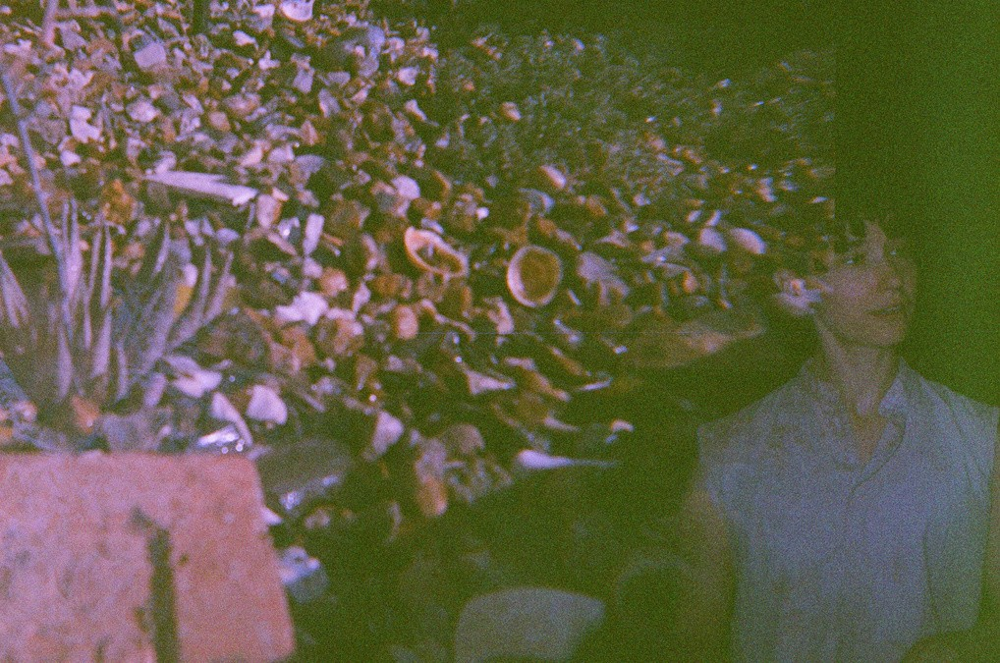
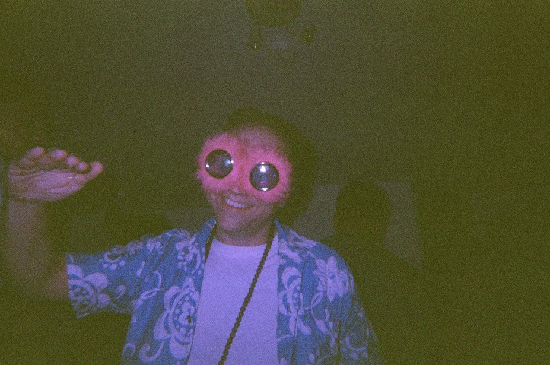
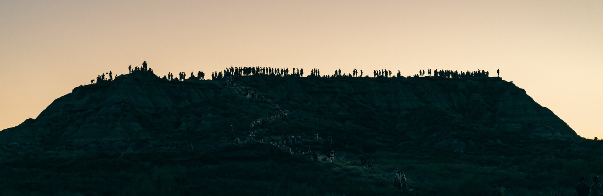

MOOWS / Issue 01 · August 2026
Cambrian dream
A breath. A shadow extends from the hill across the bed of the shallow sea. Sit on a hill that is a sponge that is a hill. A mushroom grows and, on its stalk, five eyes appear. Gaze at the shadow from the hill and beaming mosaic of lights. See another stalk extending upwards to the light. A breath. Grow pairs of clawed legs and walk. Grow a soft arm and reach out. Grow another mushroom eye with ten thousand lenses reflecting the broken light. Extend and feel the soft sponge of the hill, trace the many tentacles of green along the waves. Is this me? On the hill, gazing with five eyes out and across the seabed? Run, run, run, open the eyes, bend the soft body and feel the direction of the stream. See that that isn’t me, there on that hill that is a sponge that has five eyes. Extend and stop. Flatten the body like the sea-leaf over there that is not me, but I become like him. Grow an armour of scales, grow a hard shell, grow rigid paired spines along the back of the flat-leaf body that is me, and let the stream take you. Don’t run, don’t look, this is alright too. I am here. This is me, inside. A breath.


